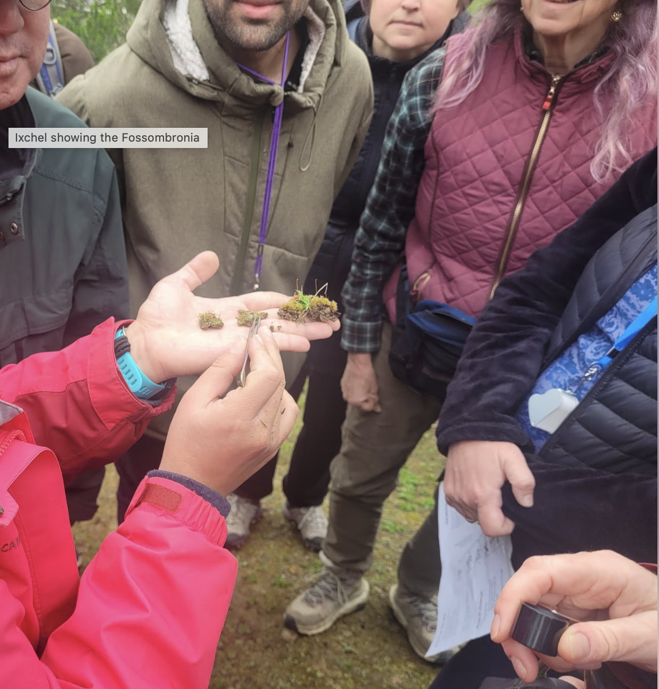
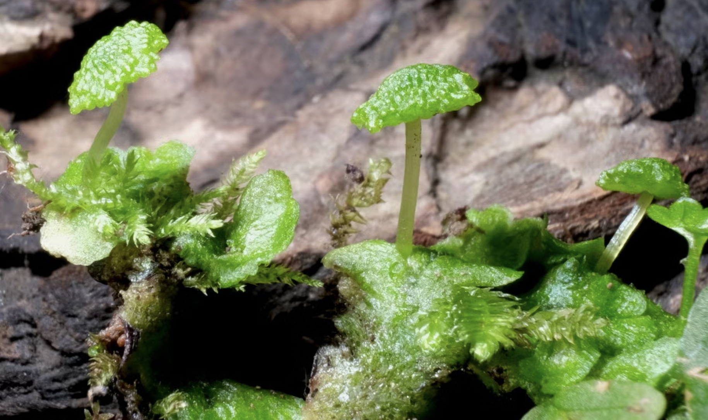
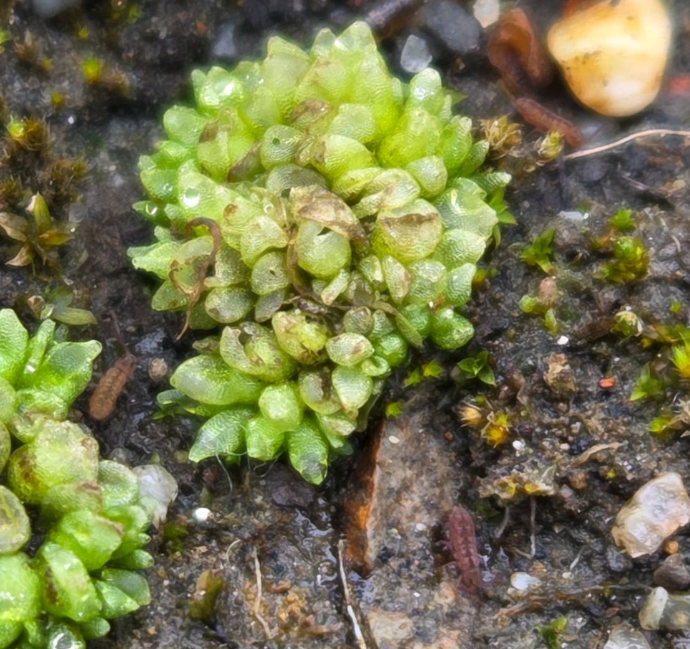

A California Native Plant Society public hike: learning little plants among the redwoods
Written on January 25th, 2025 by Ixchel S. González Ramírez
On March 16th, a group of ~25 enthusiastic people join me on a “hike” (one could call it a walk, others would fairly refer to it as a crawl) in Reinhardt Redwoods Regional park to look at the microworld that lives among the redwoods. After what I hope was a short but encouraging talk about why bryophytes are so cool, we started by checking out the first division of bryophytes hornworts that grow on the side of the trails. This year they were very happy with the rain and thriving, already showing off their horns. We then moved to a slightly drier environment, just in a little exposed area besides the trail where more xerophitic and ephemeral bryophytes grow. The battle to avoid poison oak was extremely worth it because we were able to see a very healthy population of Fossombronia producing its characteristic very rounded sporangia on top of a hyaline stalk. Living together with Fossombronia, we found many Riccia! Too young to see the spores, but definitively thriving. I wish I had taken a picture of the group kneeling and getting their face close to the ground to appreciate these endearing plants, but I was too busy joining them in the crawling activity.
 Fossombronia and Riccia, two species that thrive as ephemerals! While bryophytes are commonly thought to be found only in very wet areas, some species are adapted to drier environments and perform very important ecosystem services, for example “nourishing” and preserving the soil
We then took some time to observe very closely the bark of the trees, and we discussed how to distinguish leafy liverworts from mosses, and very wet lichens from liverworts.
Finally, we proceded to walk more than 200m without stopping (quite achievement for a group of bryologists!) to find ourselves under the canopy of the redwoods, where we observed one of most especial liverowrts (in my controversial opinion) of this state park: Cryptomitrium tenerum. While we were at it, a few people made my day by taking interest on plants life cycle!!! They indulge me by letting me rant about alternation of generations for more than 10 min, and we even saw some fern gametophytes!
 Cryptomitrium tenerum, a complex thalloid liverwort who is the only representative of its genus in Northamerica. It likes shaded and wet environments, just like the one the redwoods provide!
But little we knew that the star of the day was going to be at the very end of our hike. Just when I was about to give up on our quest for the bottle liverwort, a tenacious attendant spotted them by a barbecue pit!
 Sphaerocarpos texanus, the bottle liverwort spotted at the very end of our hike
Thank you so so much to all the attendants to this hike! Your interest, curiosity, and energy was inspiring! I hope you found it entertaining and above all I hope you left with an appretiation and curiosity for the little things that we don’t always look at, yet they are always there, ready to amaze us if we give them the chance! Thank you so much to CNPS-East Bay Chapter, especially to Sally, for organizing this event!